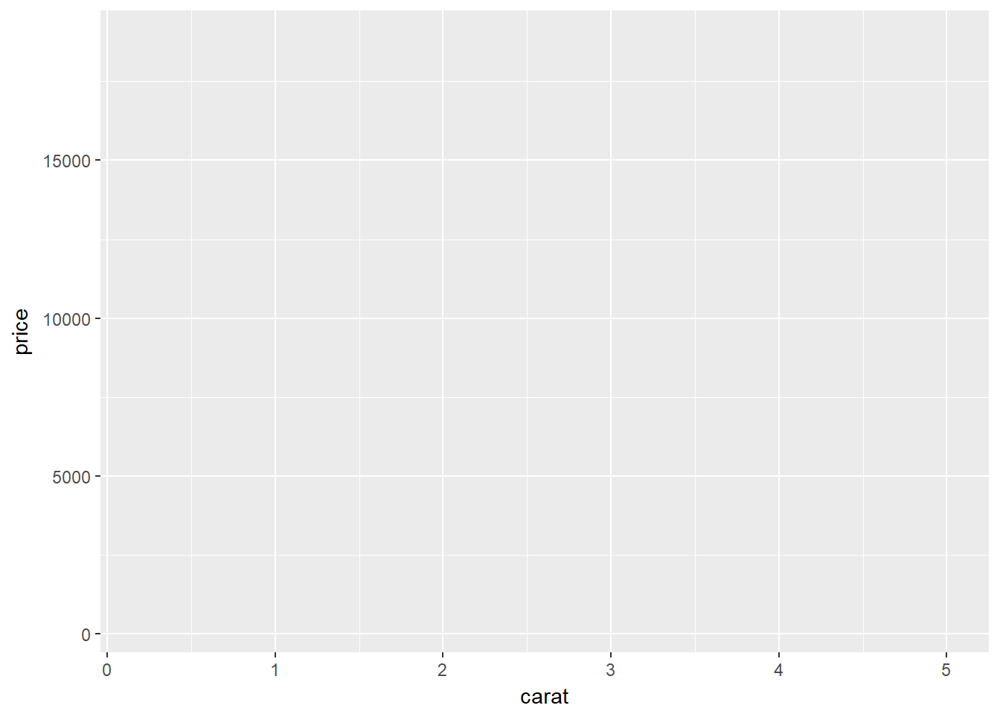
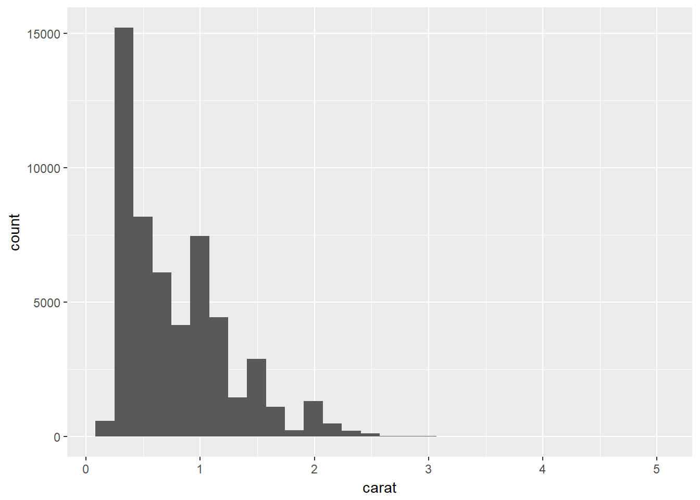

ggplot2
Plot using ggplot2
Scatter plot
library(ggplot2);
library(dplyr);
head(diamonds);## # A tibble: 6 x 10
## carat cut color clarity depth table price x y z
## <dbl> <ord> <ord> <ord> <dbl> <dbl> <int> <dbl> <dbl> <dbl>
## 1 0.23 Ideal E SI2 61.5 55 326 3.95 3.98 2.43
## 2 0.21 Premium E SI1 59.8 61 326 3.89 3.84 2.31
## 3 0.23 Good E VS1 56.9 65 327 4.05 4.07 2.31
## 4 0.290 Premium I VS2 62.4 58 334 4.2 4.23 2.63
## 5 0.31 Good J SI2 63.3 58 335 4.34 4.35 2.75
## 6 0.24 Very Good J VVS2 62.8 57 336 3.94 3.96 2.48# This will just loads the dataset. No plot will be printed until you add the geom layers.
ggplot(diamonds);
# Here we have added x and y axis. Still no plot of data.
ggplot(diamonds, aes(x=carat, y=price)); 
Add geom_point() layer
# Add geom_point layer. Each layer can be added by +
ggplot(diamonds, aes(x=carat, y=price))+ geom_point() Add geom_smooth() layer, linear modeling
#
ggplot(diamonds, aes(x=carat, y=price))+ geom_point() + geom_smooth();## `geom_smooth()` using method = 'gam'# se=FALSE removes confidence bands
ggplot(diamonds, aes(x=carat, y=price))+ geom_point() + geom_smooth(se=FALSE);## `geom_smooth()` using method = 'gam'Explore aesthetic parameter “col”
# Color the points w.r.t. cut column
ggplot(diamonds, aes(x=carat, y=price, color=cut))+ geom_point() + geom_smooth();## `geom_smooth()` using method = 'gam'Assign aes() to individual layer
ggplot(diamonds, aes(x=carat, y=price))+ geom_point(aes(color=cut)) + geom_smooth(); # We have removed aes to smooth layer## `geom_smooth()` using method = 'gam'Explore aesthetic parameter “shape”
ggplot(diamonds, aes(x=carat, y=price))+ geom_point(aes(color=cut, shape=clarity)) + geom_smooth(); # We have removed aes to smooth layer## `geom_smooth()` using method = 'gam'## Warning: The shape palette can deal with a maximum of 6 discrete values
## because more than 6 becomes difficult to discriminate; you have 8.
## Consider specifying shapes manually if you must have them.## Warning: Removed 5445 rows containing missing values (geom_point).Add axis lables and plot title using labs()
ggplot(diamonds, aes(x=carat, y=price))+ geom_point(aes(color=cut, shape=clarity)) + geom_smooth() + labs(title="Scatterplot", x="Carat", y="Price");## `geom_smooth()` using method = 'gam'## Warning: The shape palette can deal with a maximum of 6 discrete values
## because more than 6 becomes difficult to discriminate; you have 8.
## Consider specifying shapes manually if you must have them.## Warning: Removed 5445 rows containing missing values (geom_point).
Change color pelette
ggplot(diamonds, aes(x=carat, y=price))+ geom_point(aes(color=cut, shape=clarity)) + geom_smooth() + labs(title="Scatterplot", x="Carat", y="Price")+scale_colour_brewer(palette = "Set1") ;## `geom_smooth()` using method = 'gam'## Warning: The shape palette can deal with a maximum of 6 discrete values
## because more than 6 becomes difficult to discriminate; you have 8.
## Consider specifying shapes manually if you must have them.## Warning: Removed 5445 rows containing missing values (geom_point).Save the ggplot object and then print.
g=ggplot(diamonds, aes(x=carat, y=price))+ geom_point(aes(color=cut, shape=clarity)) + geom_smooth() + labs(title="Scatterplot", x="Carat", y="Price");
print(g);## `geom_smooth()` using method = 'gam'## Warning: The shape palette can deal with a maximum of 6 discrete values
## because more than 6 becomes difficult to discriminate; you have 8.
## Consider specifying shapes manually if you must have them.## Warning: Removed 5445 rows containing missing values (geom_point).The Theme
We can use theme() function to adjust size of labels. Parameters plot.title, axis.text.x, axis.text.y, axis.title.x, axis.title.y can be set using element_text() function
g <- ggplot(diamonds, aes(x=carat, y=price, color=cut)) + geom_point() + labs(title="Scatterplot", x="Carat", y="Price");
gg1 <- g + theme(plot.title=element_text(size=30, face="bold"),
axis.text.x=element_text(size=15),
axis.text.y=element_text(size=15),
axis.title.x=element_text(size=25),
axis.title.y=element_text(size=25));
print(gg1);Adjusting the legend title
You can change legned title. Based on the type of legend ggplot2 provides different function. For a legend representing color and if the color attribute is derived from discrete values, use scale_color_discrete() function. If legend correspond to shape and discrete use scale_shape_discrete(). Other functions are scale_shape_continuous(name=“legend title”). For fill attribute: scale_fill_continuous(name=“legend title”)
gg2 <- gg1 + scale_color_discrete(name="Cut of diamonds") + scale_shape_discrete(name="clarity attribute");
print(gg2);Facet_wrap
# Split based on "cut" column. plot will be distributed in n*3 layouts
gg <- ggplot(diamonds, aes(x=carat, y=price, color=cut)) + geom_point() + labs(title="Scatterplot", x="Carat", y="Price")
gg3 = gg + facet_wrap( ~ cut, ncol=3);
print(gg3);Bar charts
ggplot(diamonds,aes(x=cut))+geom_bar();
ggplot(diamonds,aes(x=cut))+geom_bar(aes(fill=clarity));
ggplot(diamonds,aes(x=cut))+geom_bar(aes(fill=clarity)) + coord_flip();# Suppose for every cut class, plot mean depth. x-axis: cut class while y-axis: mean(depth)
tempdf=group_by(diamonds, cut) %>% summarise(meandepth=mean(depth))
ggplot(tempdf, aes(x=cut, y=meandepth))+geom_col();# geom bar for continious data
ggplot(diamonds, aes(x=carat))+geom_histogram()## `stat_bin()` using `bins = 30`. Pick better value with `binwidth`.
Density plot
ggplot(diamonds, aes(carat))+ geom_density();ggplot(diamonds, aes(carat, colour=cut))+ geom_density();ggplot(diamonds, aes(carat, colour=cut, fill= cut))+ geom_density();ggplot(diamonds, aes(carat, colour=cut, fill= cut))+ geom_density(alpha=0.1);# Stacked density plots:
ggplot(diamonds, aes(carat, colour=cut, fill= cut))+ geom_density(alpha=0.1, position="stack");Box plot
ggplot(diamonds, aes(x=cut, y=table)) + geom_boxplot();ggplot(diamonds, aes(x=cut, y=table)) + geom_boxplot(notch = TRUE);ggplot(diamonds, aes(x=cut, y=table, colour=cut)) + geom_boxplot(notch = TRUE);ggplot(diamonds, aes(x=cut, y=table)) + geom_boxplot(fill = "white", colour = "#3366FF"); ggplot(diamonds, aes(x=cut, y=table)) + geom_boxplot(outlier.colour = "red", outlier.shape = 1);